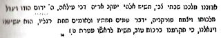

II. BÖLÜM
Önceki bölümü, eğer Sultan IV. Mehmed tarafından engellenmeseydi Yahudiliğin çöküşüne sebep olabilecek bir Mesihlik hareketinin doğuşunu meydana getiren başlıca unsurları göstermeye ayırdık. Bu hareketin önderi, mistik metinlerle dolu ve Mesih’in geleceğini haber veren Kabalist emarelerden cesaret alan Sabetay Sevi, 5408 (1648) yılında 22 yaşındayken tarihin sahnesine çıkmayı denediğinde kararsızdı. Bu ilk denemeyi ancak kısmen başarabildi, zira birkaç sene gayesiz dolaştıktan sonra, İzmir’e döndü ve yeni Hıristiyan ve Müslüman Kabalist emareler sonrasında 1662 yılında orayı da terk edip, bu defa daha fazla cesaretle tarih sahnesine adım attı.
Bu bölüm, Sabetay’ın ölümüne kadar olan hayatının özetini aktarmaktadır.
I
Sabetay Sevi 7 Temmuz 1626’ya denk düşen, İbrani takvimine göre 5386 yılının Ab ayının 9’unda İzmir’de İspanyol kökenli Yahudi bir ailenin çocuğu olarak dünyaya geldi. Babası Mordehay Sevi{47} İzmir’e yerleşmek üzere Mora’dan gelmişti. Önceleri şehir tellallığı yapmış, sonra bir İngiliz ticaret şirketinde simsar olmuştu. Genç Sabetay’ın eğitmeni haham Isaac d’Alba ona Tevrat’ı ve biraz da Talmud’u öğreterek Kabbala’ya başlattı. 15 yaşındayken tek başına Kabbala çalışıyordu. 18 yaşında bir öğrenci grubuna ders vermeye başlamıştı bile. Kabbala eğitimi sıra dışı tavırlara sahip olmasını sağlamıştı. Kutsanmak için sık sık oruç tutup yıkanarak bedenini temizlemek istiyordu. Ailesi onu evlendirdi ama o karısından uzak durup saf kalmayı istedi{48}. Bu durum boşanmasına sebep oldu. Oğullarının bu tutumunu, karısını sevmemesine bağlayan ailesi onu ikinci kez evlendirdi, sonuç yine aynı oldu. Bu durumun sebebi neydi? Oruç ve sürekli yıkanmakla zayıflayan bu ruh ve bünyede ne olup bitiyordu? Tüm bunların sebebini Kaballa’nın onun üzerindeki etkisine bağlamak gerekiyor. Izak Lurya’nın öğretilerine göre Kaballa’nın ana amacı, Mesih’in gelişine hazırlık yaparak ruhları terbiye etmek ve Zohar’a göre 1648 yılında{49}, Sabetay, her türlü teşebbüs ve arzunun yaşı olan 22 yaşını sürerken, meydana gelecek olan kurtuluş çağını hızlandırmaktı. Mesih gelecekse, diye düşünüyordu, gelecek olan Mesih neden kendisi olmasın? Bu düşüncelerle doluyken, harekete geçmeye karar verdi, öğrencilerine kendini Mesih olarak ilan etti ve bir gün, Talmud’da yasaklanmış olmasına rağmen, T.H.V.H{50} harflerinden oluşan ve ağza alınması on emirle yasaklanan Tetragramı telaffuz etti.
İzmirli hahamlar, başta hahambaşı Josef Eskapa olmak üzere, Sabetay’ın cüretinden üzüntü duymuş, onu yola getirmek için bet-din üyelerinden ikisini görevlendirmişlerdi. Çabalar boşunaydı. Tetragramı telaffuz ederek Mesih olduğunu beyan ediyordu. Bunun üzerine hahamlar onu ve öğrencilerini aforoz ettiler ve ölümü hak ettiğini bildirdiler. Bir süre sonra, yandaşlarının üzüntülerine rağmen 1650 yılında İzmir’i terk etti ve İstanbul’a geldi. İstanbul’da, kendisine düzmece bir belge veren Abraham Yakini{51} adında sahte bir haham ile tanıştı. Sahte haham, Sabetay’ı Mesih olarak tanıtıyor ve şöyle diyordu: “Ben, Abraham, kırk yıldır bir mağarada insanlardan uzakta yaşadım. Bir mucize anı gelmeyecek diye endişeye düştüm. Tam o sırada bir ses vaki oldu ve bana şöyle söyledi: 5386 yılında (1626) bir oğlan çocuğu doğacak, adı Sabetay olacak ve büyük ejderhaya baş eğdirecek, gerçek Mesih olacak ve silahsız savaşacak”{52}. Bu kitap daha sonraları sayısız dolapların çevrilmesine neden oldu.
Haham Josef Eskapa, Selanik’in Kabalist hareketlerle epeyce çalkalanması nedeniyle bir süre sonra bu şehre giden ve böylece Yahudi halkının sempatisini kazanan Sevi ve müritlerinin marifetlerinden dostlarını korumak için İstanbul’daki meslektaşlarına mektuplar yazdı. Bu arada giderek güçlenen Sevi, Selanikli birçok hahamı bir ziyafette toplayıp bir Sefer Tora getirtti, nikâhta okunan duaları söyledi ve Tevrat ile evleneceğini açıkladı. Bu eylemin devamı da geldi. Aynen İzmir’de okuduğu gibi, Tanrı’nın ağza alınmasını yasakladığı Y.H.V.H. harflerinden oluşan Tetragramı okudu. Şaşkına dönen hahamlar kendisine bu davranışının nedenini sorduklarında, Sabetay Mesih olduğunu söyledi. Tehdit edilince 5418 (1658) yılında şehri terk edip Atina’ya gitti. Orada da peşine düştüler ve uzun süre amaçsız dolaştıktan sonra İzmir’e geri döndü ve oradan da ayrılıp İstanbul’a geldi. Orada, kendini dini çalışmalara verdi ve İsrail’in kurtuluşunun balık burcunda olacağını söyleyerek bir balıkla birlikte dua etti. İstanbullu hahamlar tarafından tekrar takip edilince; 5419 (1659) yılında babasının yanına döndü ve orada kişiliğini{53} hiç değiştirmeden üç yıl yaşadı. Burada Mesihliğinin birinci dönemi son bulur.
II
Sabetay’ın İzmir’de sükûnet içinde yaşadığı sırada, dindar Hıristiyan mahallelerde de Mesihlik çağının 1666 yılında başlayacağına ilişkin bazı söylentiler dolaşıyordu, aynı şekilde yine dindar Müslüman mahallelerde de Mehdi’nin ortaya çıkacağı söylentileri mevcuttu. Bu dedikoduların akışı içinde; Sabetay Mesihlik hareketine tekrar başlamaya karar verdi ve girişimlerine karşı çıkan İstanbul ve Selanik yerine, 5422 (1662) ya da 5423 (1663) yılında yeni faaliyet bölgesi olan Filistin’e hareket etti. Kendisini Filistin’e götüren gemi Suriye limanı Tripoli’de durunca fikir değiştiren Sabetay İskenderiye’ye oradan da Kahire’ye geçti. Kahire’de sarraf başı (banker) ve ziraatçı, saflık ve mistik çilekeşlik örneği, Rafael Jozef Çelebi ile tanıştı. Çok zengin olduğu için, bu şahsın evi Talmud’cuların ve Kabalistlerin uğrak yeriydi; onlara hediyeler dağıtıyor ve onları koruyordu. Hoş bir fiziğe ve ses tonuna sahip olan Sabetay Sevi kısa sürede bu bankerin sempatisini kazandı. Sabetay, bu küçük başarıdan sonra Kahire’de fazla zaman kaybetmeden; kendini Mesih olarak tanıtacak mucizeler meydana getirme gayesiyle Kudüs’e hareket etti.
O çağda Kudüs’teki Yahudilerin durumu oldukça kötüydü ve Polonya’daki zulümlerden kaçan çok sayıdaki göçmen yüzünden daha da kötüleşiyordu, özel elçiler (Chilouhims), ihtiyaç halindeki Filistinlilere (Yahudilere) para toplayabilmek için Hollanda, Polonya ve İtalya gibi yabancı devletleri geziyorlardı. Bunların içinden Salomon Navaro adında bir elçi İtalya’da bir kadını sevmiş ve Hıristiyan dinine geçip, bu seyahatler boyunca toplayıp biriktirebildiği paranın tümünü bu kadına harcamıştı. Bir başka elçi daha bu gezilerde fazla başarılı olamayınca, Kudüslü Yahudiler beklenen maddî rahatlığa erişemedi. Bu şehirdeki cemaatin çektiği sefalet karşısında ve Yemenli Yahudilerin üzücü haberleri üzerine, Kudüslü Yahudilerin önemli bir kısmı şehirden uzaklaşmayı yeğlediler. Şehirde sadece Lurya ve Haim Vital’ın öğrencileri haham Jakob ben Semah, Abraham Amigo ve Jacob Hadjes tarafından dini açıdan yönetilen ama sefalet içinde bir nüfus kalmıştı{54}.
Sabetay Kudüs’e gelince, rüyalarına giren toprakları buldu. Kabalist hahamlar ve sefalete dalmış bir toplum sömürülmeye hazırdı. Bu şehirde konakladığı ilk günlerde diğer gariplikleri anlamaya çalıştı. Kendini yoksul bir yaşama adamış ve aziz kişilerin mezarlarını ziyaret etmeye başlamıştı. Bu taktik ona başarıyı garantiledi ve hoşa giden fiziği ve farklık davranışları vasıtasıyla halkın sempatisini kazandı.
Sefaletten ezilmiş Kudüslü Yahudiler, kendilerine baskı yapan Türk yönetime olan borçlarını ödeyecek durumda değildiler. Bu para nereden bulunabilirdi? Rafael Jozef Çelebi’nin Sabetay’a gösterdiği ilgi anımsanınca Kudüs fakirlerine yardım etmesi için Sabetay aracılığı ile kendisine başvurulmasına karar verildi.
Sabetay karardan memnun oldu ve görevi üstlendi. Kahire’ye gitmek üzere yola çıktı, Rafael Jozef’i bularak, Kudüs fakirlerinin ihtiyacı olan yüklü miktardaki parayı elde etti. Kahire’de kaldığı sırada Sabetay İsrail’i kurtarmak üzere bir Mesih’in geleceğini ve bu Mesih’in özelliklerinin kendinde bulunduğunu bu zengin kişiye anlattı.
Bu olayların olduğu sırada, Livorno’dan ulaşan haberlerde, genç bir Yahudi kızı, Mesih ile yapacağı evliliğin kaderinde mevcut olduğunu beyan ediyordu. Sabetay, taraftar çevresini genişletmek ve güçlenmek için bu beyanattan yararlandı.
Bu kız kimdi?
Chemielnicki kıtalarının Polonyalı Yahudi topluluklarına yaptığı katliamlarda ailesini kaybetmiş on yaşında öksüz kalmış bir gençti. Hıristiyanlar tarafından bulununca, bir manastıra yerleştirilip Katolik eğitim almış, böylece sofu olmuştu. Genç kız olunca, manastırdan kaçtı. Bir gün, manastıra komşu bir bölgenin Yahudileri, ölülerini toprağa verirken, üzerinde sadece bir gömlek bulunan bir kıza rastladılar. Nereden geldiğini sorduklarında, haham Meir’in kızı olduğunu söyleyip, bir manastırda yetiştiğini ve babasının ruhunun bir gece önce kendisini mezara çağırdığını ifade etti. Söylediklerini ispatlamak için, vücudu üzerindeki tırnak izlerini gösterdi. Yahudiler onu beraberlerinde götürüp Amsterdam’daki erkek kardeşi Samuel’in yanına gönderdiler. Orada üstün vasıflarının farkına iyice varıp Mesih’in karısı olacağını beyan etti, bu durum onu çok değiştirdi, Frankfurt’tan Livorno’ya geldi.. Güzelliği karşısında hayranları çoğalınca, düzensiz bir hayat yaşamaya mahkûm oldu. Adını değiştirip Sara olarak tutunmak istedi.
Sabetay, fırsattan yararlanmak isteyip, bir Polonyalı ile evleneceğini daha önce gördüğü bir rüya vasıtasıyla bildiğini açıkladı. O tarihlerde yirmi iki yaşında olan Sara’yı araması için Livorno’ya bir haberci gönderdi.
Sara, Kahire’ye varınca Rafael Jozef Çelebi’nin evinde Sabetay Sevi ile evlendi. Rafael Jozef Çelebi, İsrail’in artık şüphe götürmez kurtarıcısının, yazgısı olan bu kadınla kendi evinde evlenmesinden çok memnundu. Sabetay, aynı peygamber Hoşea gibi, Tanrının buyruğu ile, hafifmeşrep bir kadınla evlenmekteydi{55}.
Evlilik tamamlanınca, Sabetay ve karısı etrafını çeviren çok sayıda taraftar ve hayrandan oluşan bir kalabalık ile birlikte, El-Arich ve Gazze yolu ile Kudüs’e döndüler.
Gazze’de, mistik yönleri, kurnazlığı ve yalanlarıyla daha sonra Sabetaycılık konusunda en büyük rolü oynayacak olan genç adama, herkesin Gazze’li Nathan ya da peygamber Nathan olarak tanıdığı Abraham Nathan Benjamin Levi Eskenazi’ye rastladı (1644-1680). Bu genç adam, Filistinli yoksullara para toplamak için Yahudi cemaatlerini gezmeye çıkarken altı yaşındaki oğlunu yalnız bırakan Elise Levi’nin oğluydu. Babasının yokluğu esnasında cemaat ona bakmış ve haham Jacob Hadjes onun eğitimiyle ilgilenirken, zekâsını ve yeteneğini fark etmişti.
Haham Hadjes, bir gün, Samuel Lisbona adında Gazze’li çok zengin birinden, tek gözlü ama yüklü bir çeyize sahip kızıyla evlendirmek için en iyi öğrencilerinden birini kendisine tavsiye etmesini talep eden bir mektup alır. Haham Hadjes ona Nathan Levi’yi tavsiye eder. Nathan Levi teklifi kabul ettikten sonra sefaletten zenginlik ortamına geçecektir. İşte, Sabetay’ın Gazze’de rastladığı kişi, az eğitimli ama fikrin şekil içinde eridiği dönemin hahamlık tarzını çok iyi bilen, bu genç adamdır. Sabetay’ın şöhretinin farkında olan Nathan, bir rüyada Onun (Sabetay’ın) gerçek Mesih olduğunu gördüğünü ve hiç bir silah kullanmadan Filistin Sultanını tutsak edeceğini söyler ve Mordehay Sevi oğlu Sabetay’ın gerçek Mesih olduğunu belgeleyen ve beş yüzyıllık olduğunu iddia ettiği bir belgeyi verir. Sara’nın evliliğe ilişkin rüyasına dayanan ve Mesih’in geleceği yeri hazırlayan İsrail peygamberleri gibi onun yerini hazırlayarak gelişini ilan eden Nathan’ın bildirisinden ve belgenin içeriğinden çok memnun bir halde, gerçek Mesih olduğuna kendisini inandırır.
Sabetay müritleri ile birlikte, Mesih olduğunu açıkça beyan ettiği şehre, Kudüs’e gitmek üzere Gazze’den ayrılır. Şehrin hahamları, Rafael Jozef Çelebi’nin Filistinli fakirler için verdiği paraları sağda solda sarf etmesi ve dine karşı tutumu nedeniyle diğerlerinin aksine, düşmanca bir tavır alırlar. Öğrencileri gözle görülür şekilde artan Sabetay, hahamların düşmanca davranışları karşısında kayıtsız kalır. Sabetay’ı Kudüs’e götüren Nathan, Eli peygamber olduğunu açıklar ve mukaddes bir gece gökten gelen bir sesin kendisine: “Bir yıl ve birkaç ay geçtikten sonra, David’in oğlu (Maşhiyah ben David) Mesih’in kraliyeti yeniden kurulacak” dediğini ilave eder ve bu haberi dünyanın tüm Yahudi topluluklarına bir mektupla yazılı olarak duyurur{56}.
Girişimlerinin başarısını görüp Kudüs’te fazla zaman kaybetmek istemeyen Sabetay, kendisine karşı muhalif ve kızgın olan hahamların tepkilerinden çekinip, Sultanın başkenti olması nedeniyle en şerefli faaliyetlerine sahne olabileceğini düşündüğü İstanbul’a daha sonra geçmek üzere, İzmir’e dönmeye karar verir. Ama Kudüs’ten ayrılmadan önce, Mısır ve Avrupa’ya Mesih olduğunu bildiren haberciler gönderir ve eniştesi Samuel Primo’yu kendisine sekreter yapar. Bu haberciler içinde Mora’lı Sabetay Rafael ve Alman Kabalist Mathatia Bloch da mevcuttur.
Karısı, sekreteri ve müritleri ile birlikte Kudüs’ten ayrılırken Sabetay büyük bir coşkuyla karşılandığı Halep’e gider. Orada kaldığı sürede, Daniel Pinto ve Mois Galante’nin de içlerinde bulunduğu dört haham, Mesih’in geleceğini müjdeleyerek ve bunu duyurmasına yardımcı olmak için İzmir’e giderler{57}.
Nathan’a gelince, Mesih’in müteakip gelişi kehanetinde bulunmak üzere peygamber ikametgâhı olarak seçtiği Gazze’ye geri döner.
III
Sabetay doğduğu ülke olan İzmir’e 1665 yılının eylül ayında geldiğinde, kendisine karşı birleşen hahamlar Rav Yuda Mortero’nun evinde toplandılar. İlk tepkileri kendisini Mesih ilan eden Sabetay’ı kötü bir şekilde karşılamak oldu. Şehrin hahambaşısı Hayim Benbanaste, İzmir hahamlarına hitaben yazılmış İstanbul hahambaşısı Yomtov ben Yakar ve 25 arkadaşının imzaladığı bir mektubu okuyarak, Sabetay’ın bu şehre gelince öldürülmesi emrini ve bu emri yerine getiren kişinin pek parlak bir geleceğe sahip olacağım alenen açıkladı. İzmirli hahamlar da İstanbullular ile aynı fikri paylaşıyorlardı; ama hiç kimse bu cinayeti işleyip Sabetay’a sempati duyan halkın kızgınlığına hedef olmaya cesaret edemiyordu. Bu arada, hahamların bu kararı, Sabetay üzerinde de etkisini gösterdi ve bir süre şehir dışında yaşamak zorunda kaldı.
Bir süre sonra, Sabetay Hanuka bayramını kutlamak üzere İzmir’e geldi. Haham Mois Galante, kendi inşa edip adını verdiği sinagogdaki duadan sonra Sabetay’ın gerçek Mesih olduğunu açıkladı. Şehrin ileri gelenlerinden ve Mesihlik hareketine karşı çıkanlardan Haim Pinya buna çık kızdı. Bu esnada Sabetay karşıtlarının gittiği “Portekiz” sinagogunda Salonum Algazi ve Benbanaste adlı hahamlara hakaret edilmesi, Sabetay taraftarlarının çoğalmasına neden oldu. Başarısından emin olan Sabetay, birkaç gün sonra gerçek Mesih olduğunu apaçık ilan ediverdi. Haham Benbanaste’nin bir süre sonra kendisini İzmir temsilcisi yapan Sabetay’a katılması da şaşkınlık yarattı. Bet-din başkanı olan haham Aaron Lepapa, Sabetay’ın öfkesinden korkup Teselya’ya iltica etti. Haham Salomon Algazi de aynı sebeplerle İzmir’i terk etti.
O sırada, İzmirli Yahudiler bayram ediyorlardı; artık bir Mesihleri vardı. Sabetay kadıyı ziyaret etmeye karar vermişti ve kendisi Türkçeyi bilmediği için tercümanlık yapmak üzere ağabeyi Eli ona refakat ediyordu. Ziyaretinin nedenini anlamak için oldukça büyük bir kalabalık onu takip ediyordu. Kadı, ziyaretinin ve şehirdeki tüm bu gürültünün nedenini ona sordu. Sabetay Kadı’nın huzurunda şaşkına döndü, zira beklediği bir mucize gerçekleşmeyince hayal kırıklığına uğramıştı. Sıkıntı içinde, üç kişinin Sultanı çekiştirdiğini söylemeye geldiğini iletti. Kadı onların cezalandırılmasını emretti. Sabetay, Sultan sözcüğü ile kendisini ima ediyordu. Evine dönerken, Zebur’dan sureler söyleyerek yürümeye başladı, kalabalık bir grupta kendisini takip etmekteydi. Bu durumdan çok memnundu ve önceleri mesafeli davrandığı kadınlarla ilgileniyor; karısı Sara da erkeklerin etrafında dört dönüyordu.
İzmir Yahudilerinin üzerinde bir çılgınlık rüzgârı esiyordu, Bu öyle bir rüzgârdı ki, bir süre sonra İzmir, Sakız cemaatleri, Rodos, İstanbul, Selanik, Edirne, Sofya, Belgrad, Budapeşte, Mora, Almanya, Polonya vs. çevresini de etkisi altına aldı. Onu kötülemeye ve yok etmeye çalışan kararlı rakipleri halka kehanet sanatını öğretmeye çalışıyorlardı. Erkek, kadın, kız ve oğlan çocukların, hizmetçilerin sokaklarda hakaretlerini görmek üzücü bir deneyimdi{58}. Bu durum Yoel peygamberin kehanetindeki gibi, Mesih’in gelişine bir işaretti.{59} Mesih’in gelişi politik olarak uygulanan oruçların ortadan kalkmasına neden olunca Sabetay, Zekeriya peygamberin sözlerine istinaden{60}, Kudüs’ün düşman tarafından alınış tarihini anımsatan 17 Temmuzu bayram günü ilan etti, bununla ilgili bir bildiri yayınladı.{61} Geleneksel sabah dualarına kendisi adına bazı ilaveler yaparak duaları değiştirdi. Örneğin anoten techoua duasında her Cumartesi anılan Sultan IV. Mehmet adı kaldırılarak yerine Sabetay Sevi’nin adı konuldu. Bu duanın yeni şekli şöyledir:
{62}
Sabetay’ın taç giyme töreninin ardından, dünyanın dört bir köşesinden yola çıkan ziyaretçi gurupları, İsrail kralının ayaklarına kapanarak bağımlılıklarını göstermek için İzmir’e geldiler ve o an için özel hazırlanan bir protokole göre karşılandılar.
IV
Mesih’in yakında geleceğini öğrenince Osmanlı Yahudilerinin ruhsal ve düşünsel durumlarında ne gibi değişiklikler baş gösterdi?
Ricaut, bu durumu şu şekilde tasvir ediyor{63}:
«Yahudilerin bulunduğu Türk şehirlerinin hepsinde halk Mesih’i beklemeye koyulmuştu. İnsanlar Sabetay’ın geliş haberinden o kadar etkilenmişlerdi ki, ticarî yaşam tamamen felce uğramıştı. Herkes, iyilik, namus, haysiyet ve hatta sıradan değerlerin bile kendilerine gizli ve mucizevî bir şekilde ulaştırılacağını hayal ediyordu. Özellikle, kurtuluş zamanının ve Mesih’in gelişi olarak belirtilen mevsimin yaklaştığına inanıp iki misli gayret sarf etmek isteyen Yahudilerin bulunduğu Selanik’te bu durum hâkimdi. Sadece vicdanlarını temizlemekle ilgileniyorlar, sınamaya gelecek kişinin en küçük düşüncelerine bile nüfus edecek bakışlarının, işledikleri suçları ve hayasızlıklarını görmemesini istiyorlardı. Böyle büyük bir görevi yerine getirmek için halkın toplumsal kurallarından sorumlu olan hahamlar atandı ki bunlar kurallar üzerine dualarının, sadakatinin ve oruçlarının kapsamlarını belirleyebilecekti. Ancak günahlarının cezasını çekmekte gösterdikleri sabırsızlık bu “cockham”ların kararını beklemeyi engelledi. Onlara oruçlarıyla iştirak edenler de oldu ve o kadar aşırı bir perhize girdiler ki, tam yedi gün hiçbir gıda almayan vücutta açlık hissedilmez oldu. Ayrıca, rutubet ve soğuğun vücutlarını kaskatı kesip hissizleştirinceye kadar, sadece kafaları açıkta kalmak üzere çırılçıplak toprak altına gömülenler de oldu. Nefsi kırılmış olanlar, omuzlarına yanan balmumu damlattırdılar. Nihayet, mevsimin sertliği, bazılarının karda yuvarlanmasına, diğerlerinin denizde yüzmesine veya buzla kaplı sulara atlamasına engel olmadı. Omuzların, kaburgaların dikenlerle çizilip, otuz dokuz kamçı yemek, en sıradan disiplin uygulamasıydı. Dünyevî uğraşların tümü bir kenara terk edilmişti; hiç kimse çalışmıyordu ve mağazalar malları ne fiyata olursa olsun satıp kurtulmak gayesiyle kaldığı saatler dışında genelde kapalıydı. Çok eşyası olanlar bunlardan kurtulmak için satıyorlardı; ama aforoz, para cezası ya da işkence gibi cezalar uygulanarak her türlü alışverişin yasaklandığı Yahudilere satma izni yoktu. Zira meslekler ve uğraşlar imanlarının teminatı sayılıyordu. İnanca göre din istismarcılarının sahip olduğu mallara Mesih’in geldiği gün kendileri sahip olacaktı. Hayatı devam ettirmek için gereken ve şimdilik sahip oldukları şeylerle yetinmeye Mesih gelinceye kadar razı olmak, hepsi tarafından kabul gören bir düşünceydi. Ama çoğunun çalışmadan geçinebilecek eşyaya ve erzaka sahip olmaması nedeniyle, fakirler için yardım toplanıyordu. Bu vesileyle, ihtiyaç içinde geçen bir yaşamda inançsız bir hayat sürülmeyeceği için, başkalarına, sefahate dalıp gitme ya da taahhütlerini oluruna bırakma bahanesi uyduruluyordu. Zenginler yardımlarında epey cömerttiler öyle ki, sadece Selanik’teki zenginlerin verdiği sadaka ile dört yüz fakir yardım görmüştü. Nihayet, Mesih kendilerini kabul etsin diye bir taraftan vicdanlarını her türlü günahtan temizlemeye çalışıp güzel sanatlara ilgi duyarken, diğer taraftan, yasanın bazı hususlarını ihmal etmiş olmakla suçlanma korkusuyla ve esasen eski bir emir olan “gelişin ve çoğalın” anlayışı doğrultusunda, bulunulan yeri ve koşulları hesaba katmadan on yaş ve altı sayısız çocuğu topluca evlendirdiler. Daha sonra, sahtekârın oyunu meydana çıkınca, ya da gelişinin gürültüsü dağılmaya başlayınca daha olgun düşünerek genel bir muvafakatle başarmalarına karar verecekleri 600-700 çifti birleştirdiler.»
V
Sabetay Sevi tarafından canlanan Mesihlik hareketi Yahudi olmayan Türklerin ve Avrupa’nın dikkatini de çekti. Ülkedeki Yahudi olmayan nüfus, Yoel peygamberin öngördüğü gibi, erkek ve kadınların sokaklarda hakarete uğrayışını kendi gözleriyle görünce, bu hareketten çok etkilenmişe benziyordu. Birçok Hıristiyan fikrini beyan ederek Yahudilere şöyle söylüyorlardı “Aziz topraklara giderken sizin yanınızda olacağız.” Başlarında bir dervişin bulunduğu Müslüman bir gurup Sabetay’ın Mesih olarak yaydığı öğretisine inanmıştı.{64}
İstanbullu birkaç Ermeni, Sabetay’ın Mesihlik değeri üzerinde fikir yürütmek isteyince, hahamlara başvurup onlara şunu sordular “Siz ne diyorsunuz? O peygamber mi? O gerçekten Mesih mi yoksa Hıristiyan mı?” Hahamlar söyle cevap verdiler “O Mesih değil. O yalancı ve saralı biri ve davranışları Yahudiliğe aykırıdır.”{65}
Hareketin dışarıdaki etkinliği Türkiye’dekinden daha geri kalmamıştı. Yukarıda bahsettiğimiz gibi, yelkenleri ve halatları ipekten olan, bandırasında “İsrail’in on iki kabilesi” yazan ve İbrani’ce konuşan bir mürettebata sahip bir geminin İskoçya’nın en kuzey sahillerinde dolaştığı haberi İngiltere’de yayılmıştı. Her zaman olduğu gibi, İngilizler, Sabetay’ın başarısı konusunda bahislere giriyorlar ve iki yıllık bir süre içerisinde Kudüs’ün kralı olacağını ileri sürüyorlardı. Hamburg’da, dinine bağlı Protestanlar vaiz Esdras Edzard’i görmeye gidip, şu soruyu sorarak takınmaları gereken tavır hakkında tavsiyelerini almak istediler. “Sadece Yahudilerden değil, İzmirli, Halepli, İstanbullu ve Türkiye’nin diğer illerindeki Hıristiyan muhabirlerimizden de öğrendiğimize göre, Yahudilerin yeni Mesihi mucizeler yaratıyormuş ve diğer ülkelerdeki din kardeşlerinin hepsi onu destekliyormuş. Bu olayı, bize Mesih’in çoktan geldiğini anlatan Hıristiyan öğretisiyle nasıl uzlaştıracağız?”
VI
Elde ettiği başarılardan cesaret alan Sabetay dünya krallarının kralı olacağına ve buna bağlı olarak, ikinci derecedeki kralları belirleyeceğine inanıyordu. Dünyayı 38 krallığa bölüyor ve kralların adlarını sıralıyordu.{66} Bu davranışı tuhaflığın son kertesiydi.
Türkiye’nin Venedik ile savaş halinde olduğu bir dönemde Sabetay’ın ülke içinde neden olduğu sorunlardan haberi olan Türk hükümeti, üst makamlar huzurunda, yaptıklarının hesabını vermek için Sabetay’ın İstanbul’a gönderilmesini İzmir kadısına emretti. Kadı, Sabetay’ın hareketini çabuklaştırdı ve sadrazam Köprülü Ahmet Paşa’ya Sabetay’ın yarattığı durum hakkında bilgi verdi. Sabetay, işinin en önemli bölümünü gerçekleştirmek üzere İstanbul’a Tanrının buyruğu üzerine gittiğini İzmirli Yahudilere söyledi. 1666 yılı Ocak ayının ilk günlerine doğru, beraberinde birkaç kişi ile birlikte bir gemiye bindiğinde kendisini sevenlerden oluşan büyük bir kalabalık onu takip ederek, karadan İstanbul’a doğru yola çıktı. Yolculuk çok yorucu ve 39 gün gibi uzun bir sürede tamamlandı. Gemi tamir için Çanakkale’de durduğunda Sabetay karaya çıktı. Sadrazam’ın emirleri üzerine, durumun farkına varan yerel otoriteler onu derhal Küçükçekmece üzerinden İstanbul’a getirdiler. Sorguya alınan Sabetay’a subaşı tarafından dayak atıldı.
İzmir kadısının ısrarla şehadetine karşılık Sabetay her şeyi inkâr etti. Zincirlenerek hapse atıldıktan sonra hüküm giyeceği günü beklemeye koyuldu. Gördüğü kötü muamele, Mesih’in müritlerini şaşırtmaktan çok, içine düştükleri yanılgıyı onaylamış oldu ve bu alçaklık, çekilen acıların onun şerefine şeref katacağını öne süren bir inancın uygulanması olarak yorumlandı.
Sabetay’a uygulanan bu adalet anlayışı şehrin çeşitli bölgelerindeki guruplara Yahudilerle alay etme fırsatı verdi. Onlara, «Çifut (Yahudi) geldi mi? Haham geldi mi? Nevi (peygamber) geldi mi?» gibi sorular yöneltiliyordu.{67}
Tutuklanmasından birkaç gün sonra, Sabetay durumundan şikâyet etmeye başladı. Kendisini ziyarete gelen Yahudilere ricada bulunarak, Mordehay Kohen’in oğlu ve Vezirin Bankeri olan Yuda Çelebimin olaylara müdahale edip kendisini hapisten çıkartmasını ve nereye olursa olsun göndermesini talep etti{68}. Vezir, Sabetay’ın Çanakkale’ye gönderilerek, eski Abidos’ta, Kumkale’de kalmasını emretti ve öyle oldu. Sabetay’ın gelişi Pesah bayramı ile kesişti. Orada bir Pesah kuzusu kurban etti ve etin, Musa kanunlarınca yasak olan kısımlarından bile yedi.
Abidos’tayken, Sabetay, sekreteri Samuel Primo’yu ve küçük bir gurubu yanında tutabildi. Vezirin Sabetay’ı öldürtme olasılığı mevcut olduğu halde, hükümetin Sabetay’ın müritleri ile görüşmesini yasaklamayarak gösterdiği ilgisizlik, Abidos kalesi mahkûmları arasındaki müritlerince vezirin Mesih’e olan saygısının ispatı olarak algılandı.
VII
Sabetay, Abidos’ta kötü kokan bir tutukevinden iklimin daha iyi olduğu bir yere geçmekten memnundu. Başkentten uzaktaydı ve Osmanlı imparatorluğunun üst makamlarının doğrudan kontrolünün de dışında olmaktan memnundu, içinde bulunduğu yeni koşullar nispeten sakindi, fakat bu durum yaşadığı kaleye büyük bir Yahudi akınının gerçekleşmesini engellemiyordu. Sadece komşu yörelerden değil, Polonya, Almanya, İtalya, Hollanda vs. gibi yabancı ülkelerden bile gelen hacılar ona hediyeler getiriyorlar ve karşılığında hayır duaları alıyorlardı. Hapishane gardiyanları kaleye gelen hacılardan hediye alıyor ve böylece bu Yahudi akınından kimseye haber vermiyorlardı. Tam aksine, onlara çok iyi davranıyorlardı ve istedikleri özgürlük veriliyordu.
Çevresinin bu şekilde genişlemesinden hoşlanan Sabetay, kendisi tarafından açılan Mesihlik dönemini dikkate alarak yeni bir kült yöntemi geliştirmeyi ve diğer faaliyetlerin yanında doğum gününün kutlanma şeklini de düzenlemeye karar verdi. Bu konu hakkında bir bildiri yazarak bunu dünyanın her tarafındaki Yahudi cemaatlerine gönderdi.{69}
Sabetay’ı ziyaret için Abidos’a gelen hacılar arasında Nehemya Kohen adında Polonyalı ve Sabetay gibi Kabalist ve ayrıca kışkırtıcı bir haham da bulunuyordu. Nehemya’nın şöhretini bildiği için Sabetay onu çok büyük bir nezaketle karşıladı. Sabetay ile aralarında yaptıkları görüşmede Nehemya, kutsal kitaba ve hahamların ilgili yorumlarına göre birinin adı Ben-Efraim diğerininki Ben-David olmak üzere iki adet Mesih’in mevcut olduğunu, bu iki Mesih’ten ilkinin hak savunucusu, fakir ve hor görülen biri olup, ikinciye hizmet eden ve onun habercisi niteliğinde olması gerektiğini, oysa diğerinin büyük ve güçlü olup, Yahudileri Kudüs’e tekrar yerleştireceğini, David’in tahtına çıkıp şerefli işler başaracağını anımsattı.
Mesih’lerin çift olması hakkındaki tartışma Sabetay’ın hoşuna gitmedi, çünkü Nehemya Mesih Ben-Efraim olmak istiyordu ve özellikle de ilk Mesih tüm dünyada tanınıncaya kadar Sabetay’ın beklemiş olması icap ettiğini, oysa kendini çok erken tanıttığını öne sürüyordu. Tartışma kızıştı ve Nehemya Abidos’tan ayrılırken İslam dinine geçti, Sabetay’ın maskesini düşürdü, onun bir sahtekâr olduğunu öne sürdü ve İstanbul’a gelip onun hakkında büyük bir antipropaganda başlattı. Bu şehirden sonra, o sırada Sultanın ikamet ettiği Edirne’ye geçti, ve Filistin’i İmparatorluk devletlerinden ayırmayı planlayan ve Sultanın başındaki tacı alıp kendisi giymeyi amaçlayan Sabetay’ı ve dünyanın her yerinden gelen Yahudilerin Onunla kurduğu ilişkiler nedeniyle Abidos kalesinin gardiyanlarını görevlerini yeterince yapmamakla ve ihmalkârlıkla suçlayarak kaymakam Mustafa Paşa’yı Sabetay’ın marifetlerinden haberdar etti.
Kaymakam, durumla ilgili bir raporu Sultana iletti ve Sultan, müftü (Şeyhülislam) Vani Efendi’nin de aralarında bulunduğu bakanların tavsiyesini yerine getirdi. Sabetay’ı Edirne’ye getirtip sorguya çekmeye karar verdi. Sabetay’a karşı yapılan bu suçlama dışında, ekonomik karakterli bir diğer suçlama daha ona karşı gündeme getirildi. Çanakkaleli Şeyh Mahmut, Edirne’deki Yahudilerin etkisiyle meydana gelen hayat pahalılığından şikâyet eden yerel halkın dertleriyle mücadele etmek ve bu duruma bir son vermek için bu şehrin ileri gelen Müslümanlarından bazılarının başına geçti.{70}
Sabetay’ın Edirne’ye gelişi halk arasında çeşitli konuşmalara sebep oldu. Hakkında, ateşin tesir etmediği, suda bırakılınca boğulmadığı, tüfeğin ve kılıcın yaralamadığı ve tüm işkence aletlerini etkisiz kıldığı konuşuluyordu.{71}
Konseyin karşısına çıkınca Sabetay’dan mucizeler yaratması istendi. Tercümanlık yapan Hayati-Zade{72} adlı doktor, ona Judeo-İspanyol dilinde şöyle dedi: «Dünyayı altüst eden mucizeler yaratma ve kendini koruma gücüne sahipsen durma göster, kurtar kendini; böylece milletini de kurtaracaksın. »{73}
Ricaut’a göre{74}, konseyin toplandığı odanın bitişiğinde bulunan Sultan bir mucize konusu seçmiş, Sabetay’ın çırılçıplak soyunup en usta okçulara hedef olmasını, derisi ve eti yaralanmadan oklara karşı koyabilirse onun Mesih olduğunu kabul edeceğini beyan etmişti.
Sultanın bu teklifi karşısında Sabetay beklenen Mesih olduğunu inkâr etti, basit bir haham olduğunu, olup bitenlerin Yahudilerin icadı olduğunu ve kendisine Mesih unvanını verenin onlar olduğunu açıkladı. Ricaut’un dediğine göre{75}, Sabetay’ın saf ve samimî yanıtından tatmin olmuş gibi gözükmeyen Sultan onun İslam dinine geçmesini emretti. Türk tarihçiler, bu din değiştirme olayından bahsederken, Sabetay’ın ilahi bir ilham vasıtasıyla din değiştirdiğini söylemektedirler.
Din değiştirdikten sonra, Sabetay, Mehmet Efendi adını aldı. İç oğlanların hamamına gönderilip yıkanması sağlandı giysileri değiştirilip kendisine bir saray giysisi verildi ve bir kese dolusu para ile ödüllendirildi. Kendisine Kapıcı Başı unvanı verildi ve günde 150 kuruş maaş bağlandı. Karısı Sara, eşinin yeni dinini benimsedi ve o da Müslüman olarak Fatma Hanım adını aldı. O da bir ikramiyeye lâyık görüldü, çavuş{76} unvanını aldı. Müritlerinin pek çoğu da aynı şeyi yaptılar.
Sabetay’ın skandallarına son veren Sultan IV. Mehmet, Yahudiliği büyük bir faciadan kurtardı. Yahudilik ona bu nedenle minnettardır.
VIII
Sabetay’ın Müslüman oluşu Türkiye’deki ve diğer ülkelerdeki Yahudiler üzerinde derin bir şaşkınlık yarattı. Özellikle Türkiye’de Yahudiler diğer yurttaşların alay konusu oldu. İzmir’de herkesin küçümseyerek kullandığı ve israfçılar, akılsızlar anlamını taşıyan yeni bir sıfat üretildi: Puştlar. Bu sıfat bu şehrin Yahudilerinin yüzünü kızarttı ve hayal kırıklığına uğrattı. Din değiştiren Sabetay onlara şu açıklamayı yazma cüretini gösterdi: «Tanrı beni Müslüman yapmak istedi; ben sizin kardeşiniz Kapıcı Başı Mehmet’im. O emretti ve ben de itaat ettim».
Sabetay’a vurulan bu darbe, ruhunun ve vücudunun göğe yükseldiğine ve mucizelerin tamamlanacağı güne kadar orada kalacağına; yeryüzünde ise Türk giysileri içinde ve beyaz sarığı ile gölgesinin dolaşmakta olduğuna inanan müritleri üzerinde hiçbir etki yapmadı. Başlıca işbirlikçilerinden Samuel Primo, Gazze’li Nathan, Yakup Palaçi, Yakup Israel Duhan ve diğerleri, Sabetay’ın otoritesini devam ettirmek ve arkasındaki hayal kırıklığına uğramak istemeyen kalabalığı toparlamak için çaba sarf ettiler.
Sabetay’ın toplumun gözünde Mesih olarak kabul edildiği süre boyunca, Nathan, Mesihliğin başarıları adına yürüttüğü propaganda hizmeti vesilesiyle Filistin’de bulunuyordu. Ancak, Mesih’in din değiştirdiğini öğrenince, bu haberin neden olduğu şaşkınlığı yaşayanların cesaretini arttırmak için Türkiye’deki Yahudi cemaatlerinin bulunduğu bölgelere gitmek üzere bir seyahate çıktı. Önce Şam’a giderek, oradan bir tane Sabetay’a{77} ve bir tane de cemaatlere olmak üzere iki itaat mektubu yazdı{78}. Bu durum karşısında, İstanbullu hahamlar devam eden bu yeni durumun ilki kadar tehlikeli olmasından endişelenmeye başladılar. Tehlikenin önüne geçmek için, Sabetay’ın öğretisini Yahudilere bir kez daha yasaklayıp, aforoz cezası getirerek, eskiden uyguladıkları tanrıya iman etme tarzına dönmelerini Yahudilere emrettiler. Kıpırdanmaların merkezi, İzmir’de olduğu için, İstanbullu hahamlar İzmir’deki meslektaşlarının dikkatini çekmek için onlara bir mektup{79} yazdılar.
Nathan’a gelince, birkaç gün Şam’da kaldıktan sonra, içlerinde kayın pederi Samuel Lisbona ve Sabetay’ın müridi bir Türk bulunan 36 kişilik inananlar gurubu ile birlikte İskenderun’a geçti. Niyeti İzmir’e deniz yolu ile ulaşmaktı, ama İstanbul’lu{80} yetkili hahamların kendisine karşı almış olduğu sıkı tedbirler karşısında, Selanik’e yöneldi ve kötü karşılandığı için bu şehri derhal terk etmek zorunda kalarak Bursa’nın limanı Mudanya’ya giden bir gemiye bindi ve 26 Ocak 1667 tarihinde Mudanya’ya vardı.
İtalya’daki Cazal’lı Yahudiler bu patırtıların nedenini ve ölçüsünü öğrenmek için İzmir’e üç kişi göndermeye karar verdiler. Elçiler Meşinlerinin ve peygamberi Nathan’ın ayaklarına kapanmak niyetiyle İzmir’e vardılar. Ancak, İzmir’e geldiklerinde Sabetay’ın din değiştirdiğini öğrenip geri döndüler. Ama geri dönmeden önce, kardeşinin gerçek Mesih olduğunu ve bir Türk kılığına girenin o değil, onun meleği veya düşünceleri olduğunu, bedeninin Tanrının öngördüğü vakte kadar orada kalmak üzere gökyüzüne çıktığını ve bunların güvencesinin Nathan’ın şahsında görüldüğünü onlara anlatıp ikna etmeye çalışan Sabetay’ın kardeşini ziyaret ettiler.
Nathan, 3 Mart 1667’de Bursa’dan gelirken yerel makamlara teslim edilmekle tehdit edildiği İzmir civarlarına ulaştı; İzmir’de kötü karşılanınca Sabetay öğretilerinin eski bir mensubu olan Doktor Abraham Misel Cardoso’nun evine saklanmak zorunda kaldı. Doktorun misafirperverliği uzun sürmedi. Nathan bir pencereden atlayıp kaçarak şehrin civarındaki Pınarbaşı kasabasında saklanıp, orada iki ay kaldı. Pınarbaşı’nda kaldığı süre zarfında, elçiler onu ziyaret edip kendisine İtalya’daki kardeşlerinden bir mektup olduğunu söylemek istediler. Olayların akışı nedeniyle çöküntüye uğrayan Nathan, mektubu almadı ve İzmir hahamı Haim Abulafya’ya onu almasını emretti. Elçiler oradan ayrılırken sahip oldukları düşünce, eğer İzmir’de olsaydı Nathan’ın kendilerini kabul edeceği şeklindeydi. Bu şehirden ayrılma koşuşturması esnasında Nathan, günahlarının affedilmesi için Sabetay’ın annesinin mezarını ziyaret etme izni aldı ve daha sonra Sakız Adasına gitmek üzere bir uşak ve üç Türk’ün refakatinde elçilere gözükmeden yola çıktı. Bir zamanlar bir Sabetaycılık merkezi olan bu adada bir süre kaldıktan sonra Trakya’nın limanlarından biri olan Tekirdağ’a gidip oradan İpsala’ya geçti.
Girit adasının fethi ile meşgul olan Türkiye ile Venedik arasındaki savaş devam ediyordu. Sultan ve saraydan bir gurup, İstanbullu birkaç hahamın da bir süre için kaldığı Edirne’de bulunuyordu. Edirneli hahamlar ile birlikte bu hahamlar, Trakya’nın küçük bir kasabası olan İpsala’ya Nathan’ın gelişini öğrenince heyecanlandılar, zira tarih Yahudi yılı 3 Sivan 5427 idi. Onu bulunduğu yerden uzaklaştırma göreviyle Edirne’den gönderilen elçi ile yaptığı bir tartışmada kehanetlerinin yanlış olduğunu beyan etmesi istendi. Nathan, verdiği yanıtta şunları bildirdi: Yahudi yılı 25 Ilul 5425 tarihinde bir ses duydum, bir yıl sonra birkaç ay daha geçince İsrail’in kurtuluşu gerçekleşecekti, bu arada kaç ay geçeceğini tam olarak bilemiyorum 5427 yılının Iloul ayına kadar, yani iki yılın tamamlanmasını beklememiz gerekiyor. O tarihe kadar kurtuluş gerçekleşmezse hayallerimin ve kehanetlerimin hiçbirinin doğru olmadığını beyan edeceğim. Nathan, delegelere söylediklerini yazılı olarak onayladı ve her türlü propagandadan uzak durmayı ve Edirne’den on iki gün mesafede bulunacağı taahhüt etti. Buna rağmen sözünü tutmadı. Onu, Sabetaycı doktrini yaymaya devam ettiğini ve Edirneli Yahudileri 17 Temmuz orucunu bayram günü olarak değiştirmeye davet ettiğini, Edirne’den üç gün mesafedeki Gümülcine’de görenler oldu. Hahamlar bu duruma çok şaşırdılar çünkü bu gibi şeylere bir son vermenin en iyi yolunun Nathan’ın mesajını geçersiz kılması için dönme Sabetay’ın kendisiyle bir araya gelmesi olduğunu düşünüyorlardı. Sabetay görüşmenin Talmutçu ve Ortodoks kurallarla savaşmaya yönelik olmayacağını düşündüğünden basit bir hizmet olarak gördüğü görüşme teklifini kabul etti.
Hahamlara değil ama onu halka göstermesi için Sabetaycı Karillo’ya hitaben bir beyanat yazdı. Edirne’deki Bet-din Karillo’yu davet ederek beyanatını orada yapmasını istedi. Karillo bunu reddetti. Bunun üzerine başka bir yola başvurulduk. Karillo 400 kuruşluk bir borcu ödememekle suçlanarak dava açıldı ve böylece tutuklandı.
Bet-din sabetaycıların toplanmalarını yasakladı, Samuel Primo’nun damadı Mois Kohen’e, evinin kapılarını Sabetay’ın müritlerine kapatması ihtar edildi, fakat bu durum sabetaycıların daha da heyecanlanmasına ve durumu Sabetaycı liderlere iletmelerine yol açtı.
Sabetay, Türk-Venedik muharebesi vesilesiyle Edirne’de bulunan hükümet yöneticileriyle işleri olan İstanbullu Yahudi sarrafları bulmak üzere Kervansaray’a giderek tüm bu kargaşalara sebep olan kişinin kendisini yanıltan sahtekâr Nathan olduğunu açıkladı. Bu açıklamaların ardından, hahamlar Nathan’ı aforoz edip, bu aforozu halka ilan ettiler. Bu uygulamaların arkasının gelmesinden korkan Nathan, Gümülcine’den ayrılıp, Janina yoluyla Korfu adasına gitti ve Pesahtan önce oradan Venedik’e geçti. Gelişinden telaşlanan Venedikli hahamlar orada kalmasını engellemek istediler ama oradaki sabetaycılar yerel makamlara başvurarak Nathan’ın kalmasına karşı çıkanları protesto ettiler. Venedikli sabetaycılar mücadelelerinde haklı çıkınca Nathan Yahudi gettosuna girdi. Bet-din önünde açıklama yapmaya davet edilince, Nathan kehanetlerinin yanlışlığını yazılı olarak beyan etti.
Nathan’ın imzasını taşıyan İpsala ve Venedik beyanatları İbranî yılı 3 Iyar 5428 tarihinde Venedik’te yayınlanarak tüm Yahudi cemaatlerine gönderildi. Venedikli hahamlar Nathan’ı Livorno’ya göndermeye karar verdiler ama o gizlice kaçarak Yahudilerin ondan bahsedilmesini istemedikleri Roma’ya geldi. Tebdil-i kıyafetle Livorno’ya geri döndü. Orada Öğretilerini takip eden birkaç kişiye rastladı ve sabetaycılığın propagandasını yapmaya devam etmeyi denedi. Ancak, bu kez hayalleri alaya alındı. Şaşırmış bir halde, Arnavutluk’u, Makedonya’yı, Bosna’yı ve hatta belki de Sırbistan’ı geçerek Türkiye’ye döndü ve hiçbir amacı olmadan on iki yıl boyun aylaklık etti. Son olarak bulunduğu Sırbistan’daki küçük bir yer olan Komanovo’dan sonra 5540 yılında Üsküp’e geldi ve orada 36 yaşında öldü{81}. Büyük Sabetaycı Nathan İbranice dilini çok iyi biliyordu. Kendi yazdığı çeşitli yazılar ki henüz yeni yeni izlerine rastlanmaktadır, dua kitaplarında basılmıştır.
IX
Sabetay’ın din değiştirme olayına tekrar dönelim. Kâhinleri ve fanatik müritleri Sabetay’ın yaptıklarından emindiler, gerek yazılı ve gerekse sözlü faaliyetlerine şimdi daha sıkı sarılmışlardı, dönekliği kabul edilen Mesih’in mucizelerinden müritleri daha sık haberdar ediliyorlardı. Ricaut bu durumu şu şekilde tasvir ediyor «Bazılarının dediğine göre, Sabetay’ı alıp Edirne’ye getirmek için sarayın gönderdiği Yeniçeriler, onun ağzından çıkan tek bir kelime ile bir anında ölüvermişler; öncekiler kadar cüretkâr olan yeni askerlerde aynı kadere sahip olmuşlar; böylesine büyük bir mucizeyi bir diğeri izlemiş, cüretlerini cezalandırdığı kişilere hayatlarını tekrar iade etmiş. Şunu da ilave ediyorlar Bu şaşırtıcı olaydan sonra kendi isteği ile hapse girmiş ve kapılar çok sıkı kapalı olmasına rağmen, o, peşinde taraftarları ile birlikte sokakta dolaşırken görülmüş. Gardiyanlar onu zincire vurmak istediklerinde demirler kendiliğinden yere düşüp bir anda çok değerli bir altına dönüşmüşler. O bu altını müritlerine hediye olarak vermiş. Sabetay böylesine büyük mucizeler yaratırken, peygamberi de aynı şeyi yapıyormuş. Nathan’ın, bir kimsenin geçmişini öğrenmesi için, erkek veya kadın, sadece adını okuması yetiyormuş. Kısa sürede bu kişi hakkında her türlü ayrıntıyı biliyor, bir bakışta tüm kusurlarını ve kötü eğilimlerini görüp, onlara tövbe ettiriyormuş. Bu yankılar kısa sürede tüm Avrupa’yı ve özellikle İtalya’yı sardı ve bu mucizeler birer gerçek olarak kabul edildi.»{82}
Sabetay’ın din değiştirmesine ve birçok cemaatin Nathan’a karşı tavır almasına rağmen, Sabetaycı hareket sona erecek gibi değildi. Gematriya, yani Tevrat’ın bazı bölümlerinin yorumu ve fanatik sabetaycıların sarf ettiği çabalar, bir avuç dolusu kişinin marifetleri nedeniyle körelen zihinlerdeki sapmaları körüklemeye yardım etti. İzmir ve Tire civarlarında sabetaycılar Ab ayının 9’undaki orucu kaldırmaya öncülük ettiler ve aynı zamanda Kuzey Afrika’nın bazı bölgelerinde de bu oruç kaldırılmış oldu. Sabetay’ın din değiştirmesine inanmayan Faslı sabetaycılar da Ab orucunu bayram günü olarak değiştirdiler. Amsterdam, Hamburg, Krakav ve İtalya’nın birçok şehri, kurucusunun Müftü Vani Efendiden İslam dini eğitimi aldığı Sabetaycı doktrine bağlı kaldılar. Sabetay ise, Yahudilerin din ve ayin kuralları hakkında da ondan eğitim almaktaydı ve bu durumu garipsemiyordu.
Musa da hayatının bir bölümünde Mısır Sarayında kalmıştı, Sabetay’da bu sebeple Türk sarayında kalıyordu. Sabetay’ın gerçek Mesih olduğunu ve Yahudi inançlarını Müslümanlar arasında kolayca yaymak için İslam dinine geçtiğini iddia eden Raza de Mehemenuta adlı Mistik bir eser sabetaycılar tarafından yayımlandı. Sabetay, Sultan’a ve Müftüye Yahudileri Müslüman yapmak için onlarla olan ilişkilerini sıcak tuttuğunu açıkladı. Beyanatı kısmen beklediği neticeyi verdi. Çok sayıda Yahudi, Sultanın huzurunda Hz. Muhammet’in dinine geçmek üzere Kudüs’ten, Bağdat’tan ve diğer uzak ülkelerden geldiler. Bu şekilde din değiştirenler, İbranice maaminim (mümin) ve Türkçe dönme adı altında ve Müslüman olmuş Yahudiler olarak tanımlanıyorlardı. Sabetay’ı Müslümanlık lehine dinî taraftar kazanma faaliyetini desteklemek için sinagoglara gidip vaaz etme yetkisi verildi. Orada sadece kendi doktrini ile ilgileniyordu. Orada öyle başarılı oldu ki, sayısız insan onun gerçek Mesih olduğuna inandı. Ancak, bir yandan Müslümanların ve Yahudilerin kızgınlığına hedef olma ve ceza alma, diğer yandan aforoz edilme korkusuyla, halk arasında dolaşırken onu tanımaya cesaret edemiyorlardı.
Müslüman olan dönmelerin sayısındaki artışı görmek için bekleyen Devlet idarecileri, Sabetay’ın verdiği sözün geçersiz olduğunu fark edince; din değiştirme esnasında kendisine uygun görülen uygulamayı kesip, onu, bazen Müslüman bazen Yahudi tutumlar içinde üç sene kalacağı İstanbul’a gönderdiler.
Girit Adası seferinden dönen Baş Vezir Köprülü Ahmet Paşa İstanbul’a gitti ve Sabetay’ın marifetleri ile ilgilendi. Baş Vezirin ajanları, onu, İstanbul’un varoşu Kuruçeşme’de birkaç Yahudi ile birlikte Mezamir ilahileri söylerken sürpriz bir baskın yaparak yakaladılar. Bu durum Köprülü Ahmet Paşa’yı olduğu kadar, durumdan yakınan Yahudileri de çok kızdırdı. Bir kenarda mesele çıkartmadan yaşamak için Haliç kenarındaki Kâğıthane varoşlarına sığınmak zorunda kaldı. Doktrincileri onu orada da takip ettiler, ancak bu takip, sabetaycılar ve Yahudiler arasındaki nefret duygularının büyüyerek devam ettirilmesinden başka bir işe yaramadı. Yahudiler, topladıkları 6.000 kuruşu Baş Vezir’e vererek sükûnete kavuşmak için Sabetay’ın İstanbul’dan uzaklaştırılmasını rica ettiler. Sabetay, yeni karısı (Sara Edirne’de ölmüştü) Yoheved ve kayın pederi Josef Pilossof ile birlikte, küçük bir cemaat oluşturmak üzere Arnavutluk’taki Berat’a gönderildi, ancak bu cemaat bir süre sonra dağıldı. Beş sene orada yaşadıktan donra, 5436 yılının (30 Eylül 1675) Kippur gününde öldü ve şehrin içinden geçen nehrin kıyısında Müslümanlar tarafından toprağa verildi.{83}